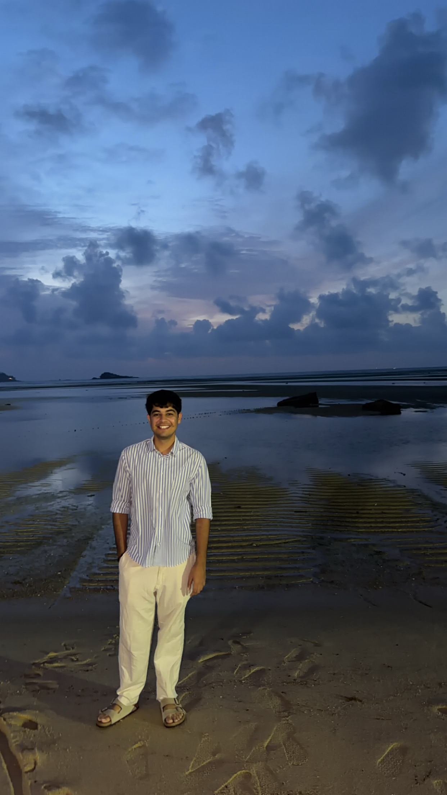

Computer engineer with roots in embedded systems, hardware architecture, and machine learning — currently at AMD Singapore, where I push chips to their limits, debug what breaks, and automate the tests that catch what others miss.

Most people never think about what happens before a chip reaches their devices. I do.
I’m a Product Development Engineer at AMD, the last stop before silicon ships to the world. Extreme temperatures, edge voltages, failure modes: if it can break a chip, I’ve probably induced it on purpose. Got in as an intern. Never left. Along the way I did research at NTU that cut on-chip network latency by 45% and made it into a paper.
Off the clock: perpetually planning the next trip, chasing good food in every city I haven’t been to yet, lifting things and putting them back down, and recently got into bouldering — turns out every wall is just a puzzle with bruises.